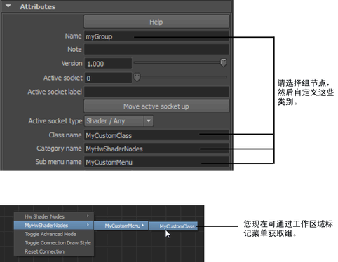

注：
默认情况下，ShaderFX 组节点（以及其他自定义元素，如场景和烘焙预览样例）将保存到 $HOME 或 \MyDocuments 目录的 maya\ShaderFX 文件夹。若要自定义 ShaderFX 文件夹的位置，请将系统环境变量 SHADERFX_CUSTOMUSERPATH 设置为首选位置。您还可以将 ShaderFX 命令与 -setUserPath 标志结合使用。
将组节点保存到磁盘的步骤
- 选择组节点，然后单击其“组”(Group)
 图标以显示组网络。
图标以显示组网络。
- 在组网络视图中，选择组节点。在 Maya ShaderfxShader“属性编辑器”(Attribute Editor)中，可以自定义以下内容：
- Name
- Category
- Sub menu name
- Class name
- 在“ShaderFX”编辑器中单击 Group > Save Group to Disk。
组节点现已重命名为“名称”(Name)，现在当您在工作区上单击鼠标右键时便可以访问，并且会在标记菜单中显示为“类别名称 > 子菜单名称 > 类名称”(Category name > Sub menu name > Class name)。
